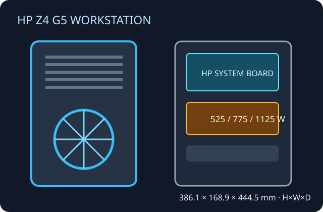

[ HP Z4 G5 // SINGLE-SOCKET WORKSTATION ]
HP Z4 G5 Workstation Tower
Generation-specific professional tower with multiple factory PSU, graphics, cooling and storage configurations.

Specifications & fit
| Model / revision | HP Z4 G5 Workstation; QuickSpecs revisions and component choices vary by product number and region. |
|---|---|
| Board form factor | HP proprietary system-board layout; the tower is not specified as an off-the-shelf ATX chassis. |
| Dimensions | About 386.1 × 168.9 × 444.5 mm (H × W × D), derived from HP's published 16.89 × 44.45 × 38.61 cm (W × D × H); check feet/accessories. |
| PSU | Factory 525 W, 775 W or 1125 W options; available GPU power depends on PSU and system configuration. |
| GPU / cooler / radiator fit | Supports HP-qualified professional cards, including high-power configurations with the matching 1125 W supply and thermal accessories. CPU heatsink/fan and card retainers are HP-specific; no third-party radiator clearance is specified. |
| Drive bays | Up to three internal 3.5-inch bays and four M.2 positions; QuickSpecs also describe two external 5.25-inch bays with limited factory configuration. Options affect bay access. |
| Airflow | Front-to-rear engineered path with dedicated CPU/GPU cooling and optional fans; retain HP baffles and accessory cooling required by high-power graphics. |
| Serviceability / compatibility | Tool-less access and replaceable HP modules; service using exact product-number parts. Board, PSU, fan/cooling kit, cage and front I/O are not generic ATX replacements. |
Manufacturer sources
- HP — Z4 G5 Workstation QuickSpecsDimensions, power, storage, expansion and supported options.
- HP — Z4 G5 product specificationsManufacturer product-level specifications and configuration context.
- HP Support — Z4 G5 manualsService guide and official downloadable documentation.